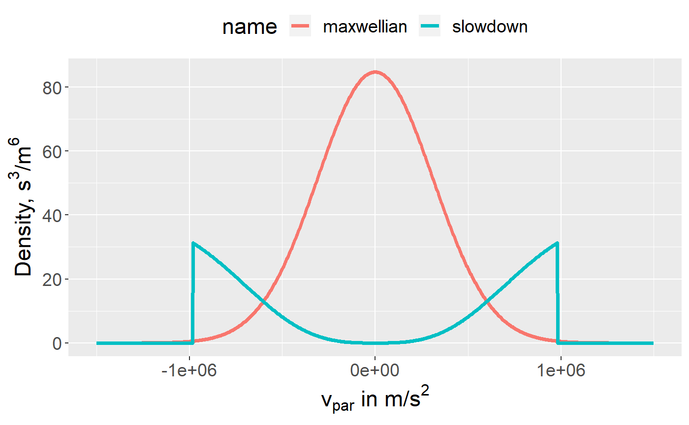
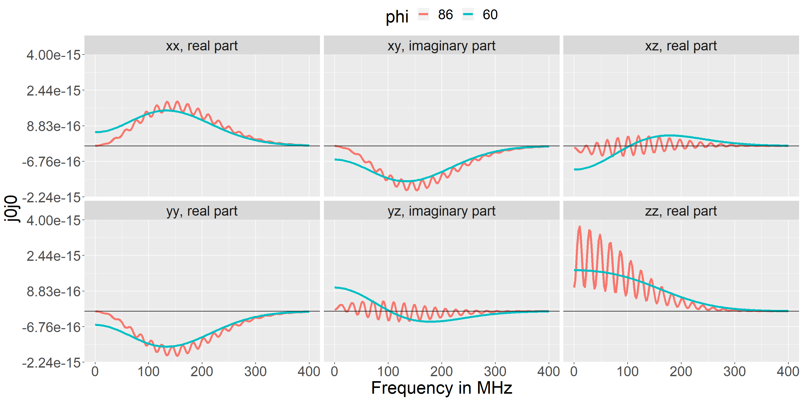
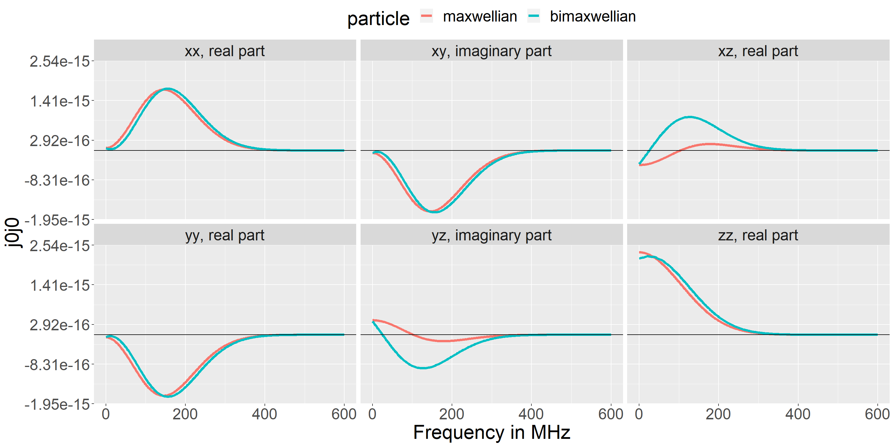
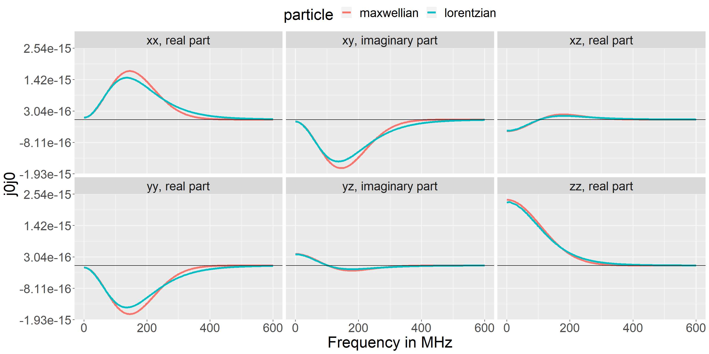
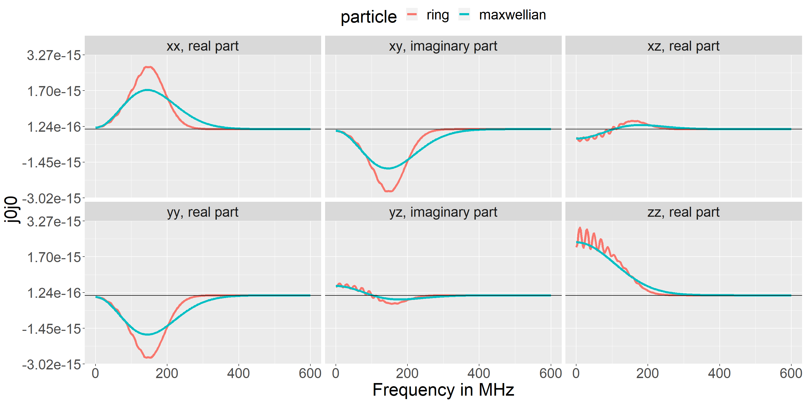
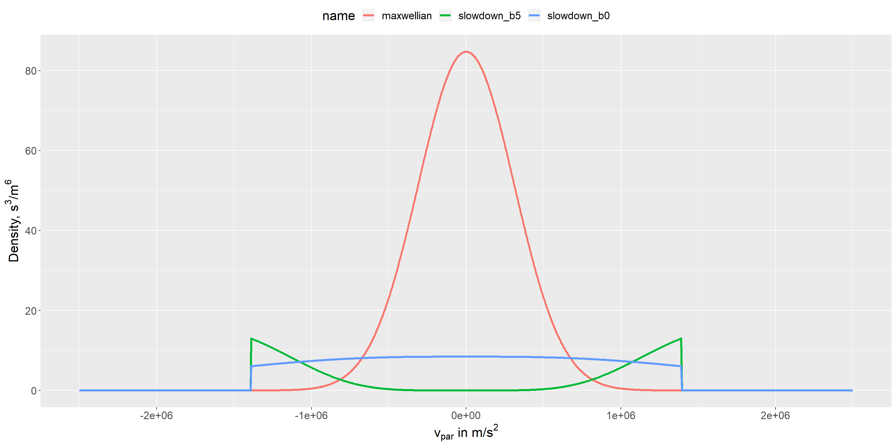
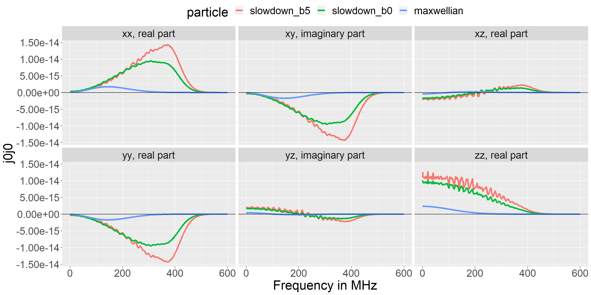
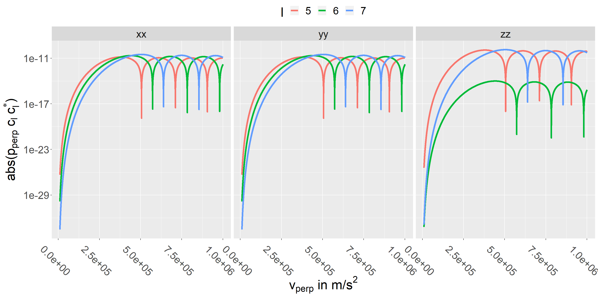
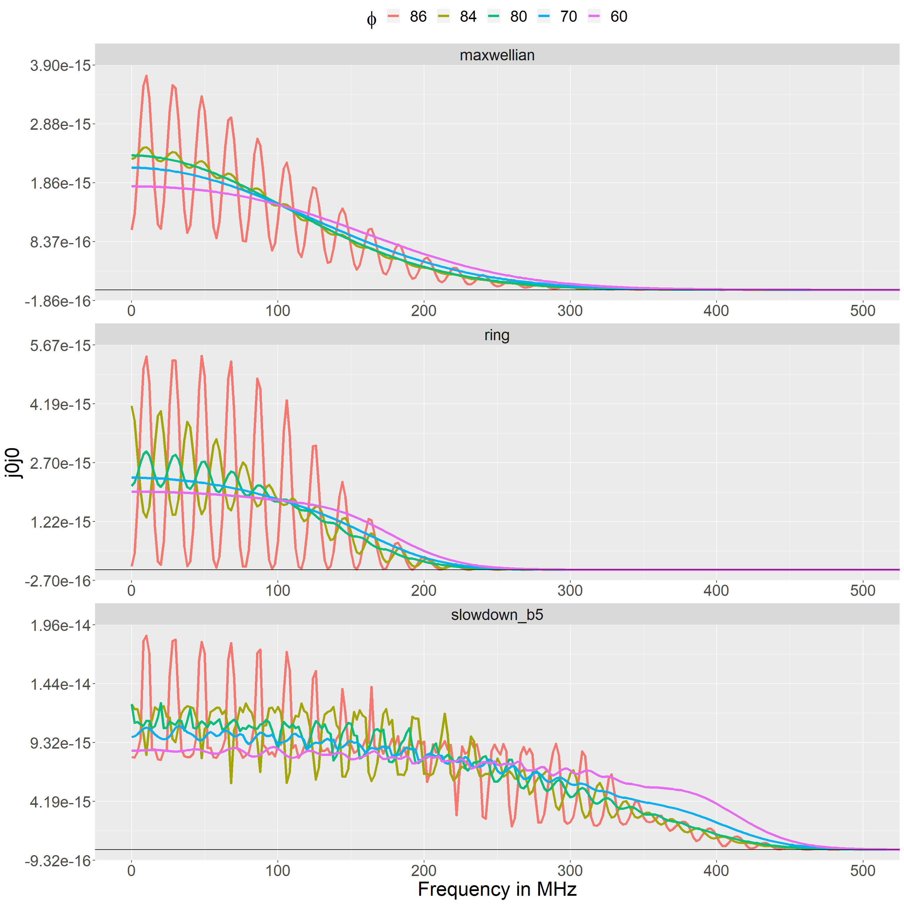

j0j0r: An R-package for numerical calculations of current correlation tensors
Source:vignettes/j0j0r_vignette.Rmd
j0j0r_vignette.RmdIntroduction
The j0j0r package is meant to calculate the unscreened current correlation tensor, \(\langle \widetilde{\bf{j}}^{(a0)} \widetilde{\bf{j}}^{(a0)}\rangle\), of the plasma fluctuation model of Bindslev 1996, Journal of Atmospheric and Terrestial Physics, 58, 983.
The elements of \(\langle \widetilde{\bf{j}}^{(a0)} \widetilde{\bf{j}}^{(a0)}\rangle\) are given by Eq. 25 and 26 of Bindslev 1996 or by Eq. 7 and 8 of Stejner et al 2011 PPCF, 53, 065020:
\[\langle \widetilde{\bf{j}}^{(a0)} \widetilde{\bf{j}}^{(a0)}\rangle = (2\pi)^2 \frac{m_a q_a^2}{\lvert k_\parallel \rvert} \int dp_\perp p_\perp \sum_{l = -\infty}^\infty {\bf c}_l {\bf c}_l^*f^{(a0)}(p_\perp, p_\parallel)\]
and
\[ {\bf c}_l = \left(\begin{array}{c} \frac{l\omega_{ca}}{k_\parallel}J_l(k_\perp\rho) \\ -iv_\perp J'_l(k_\perp\rho) \\ v_\parallel J_l(k_\perp\rho) \end{array}\right), \quad p_\parallel = m_a\frac{\omega -l\omega_{ca}}{k_\parallel}, \quad \rho = v_\perp/\omega_{ca}, \quad \omega_{ca} = q_aB^{(0)}/m_a \]
with notation as in the references.
The code is meant to be distribution-agnostic, i.e. it should be able to handle any reasonable form of the momentum distribution. The integral over perpendicular momentum is calculated numerically with stats::integrate or one of the methods from the cubature package. Analytic solutions, possible only in special cases, are not used/supported.
The code is intended to be flexible and easy to use, but it is not meant for speed. However, the code does support parallelized calculations using the future and furrr packages.
Distribution functions
New momentum distributions can be input in a specific format (described below). They do not need to be included in the package, but at present the package includes functions to set up the following distribution types:
A simple isotropic Maxwellian distribution, see
maxwellian_setup().A bi-Maxwellian distribution, with drift along the magnetic field (z-direction), see
bimaxwellian_setup().A generalized Lorentzian / Kappa distribution, see
generalized_lorentzian_setup().A “Maxwellian-like” ring-distribution, see
maxwellian_ring_setup().A bivariate normal distribution, see
bvtnorm_setup().A slowdown distribution: an isotropic fast-ion slowdown with transport modifications as formulated by George J. Wilkie, see https://arxiv.org/abs/1808.01934v2 and
slowdown_setup().
Conventions for distribution functions
A particle and its momentum distribution can be input to the code as a list with elements:
name, a text string: some name for the particle, e.g. “Deuterium”.
A and Z, integers: mass and charge numbers.
-
distribution, a list with elements:
function_name, a text string: name of function to be called to evaluate the distribution.
gradient, a text string: name of function to be called to be called to evaluate the gradient of the distribution. This intended for future use and isnNot used at present - so optional.
distargs, a named list: all arguments to the distribution function other than p_par and p_perp, e.g. density and thermal momentum.
p_scale, a double: a typical/representative momentum scale. Used to scale momentum so it is near 1 in calls to
stats::integrate()and the cubature methods.
Such a list does not have to be constructed using functions from the package, but the package includes some examples (mentioned above) of how this can be done.
The code assumes that the distributions are in cylindrical coordinates and symmetric about the magnetic field, so \({\bf p} = (p_\perp, p_\parallel)\) where the magnetic field is in the z-direction. Thus, \(p_\perp =\sqrt{(p_x^2 + p_y^2)}\) and \(p_\parallel = p_z\). When transforming between different coordinate system, the distribution function must remain normalized. So
Where the final equality again assumes symmetry around the megnetic field (z-axis), so the integral over azimuthal angle contributes a factor \(2\pi\).
Note that with this convention, the factor \(2\pi p_\perp\) is considered part of the volume element, not of the distribution function. So with this convention the expression for a Maxwellian velocity distribution is
\[ f_{maxw}(p_\perp, p_\parallel) = \frac{n}{(\sqrt{\pi}p_t)^3}e^{-(p_\perp^2 + p_\parallel^2)/p_t}, \quad p_t = \sqrt{2k_bTm} \]
where \(T\) is temperature, \(k_b\) Boltzmann’s constant and \(p_t\) is the thermal momentum corresponding to the thermal velocity \(v_t = \sqrt{2k_bT/m}\).
Examples of distribution functions
For the examples below, we attach the j0j0r and magrittr packages:
and to make use of the parallelization with the furrr package we set a plan for the future package:
A Maxwellian distribution and a slowdown distribution (with b = 3, indicating strong effects of transport) can be set up with:
maxwellian_deuterium <- maxwellian_setup(
n = 4e19,
T_eV = 2000,
A = 2,
Z = 1,
name = "maxwellian"
)
slowdown_deuterium <- slowdown_setup(
b = 3,
n = 4e19,
A = 2,
Z = 1,
birth_energy = 10e3,
n_e = 4e19,
T_e_eV = 2e3,
ions = data.frame(
Z = 1,
A = 2,
n = 4e19
),
name = "slowdown"
)And they can be evaluated (in a slice at \(v_\perp = 0\)) with
dist_examples <- calculate_distribution_data_frame(
particles = list(
maxwellian = maxwellian_deuterium,
slowdown = slowdown_deuterium
),
v_par = seq(-1.5e6, 1.5e6, length.out = 1000),
v_perp = 0
)
plot_dist(dist_examples)
Note that, although the code generally works with momentum distributions, they are shown here as velocity distrubutions in order to have more recognizable units/scales on the axis.
Also, as noted above, the factor \(2\pi p_\perp\) is considered part of the volume element, not of the distribution function. So it is not included here.
The function calculate_distribution_data_frame() returns a data frame with the evaluated distribution for all combinations of its arguments: particles, v_par and v_perp. So a 2D-plot can be obtained by allowing both v_par and v_perp to vary:
calculate_distribution_data_frame(
particles = list(
maxwellian = maxwellian_deuterium,
slowdown = slowdown_deuterium
),
v_par = seq(-1e6, 1e6, length.out = 300),
v_perp = seq(0, 1e6, length.out = 300)
) %>%
plot_dist() +
ggplot2::facet_wrap( ~ name)
The normalization can be checked with the function integrate_distribution(). For example:
[1] 4.000002e+19
Calculating j0j0
The function j0j0_element() is used to calculate a single element of j0j0 for a single wave vector, frequency, distribution etc. The function j0j0() is a wrapper for parameter sweeps. It requires the following input:
k: length of fluctuation wave vector. No dispersion function is included with the package. So in the exaples below, k is simply set to \(2\pi / \lambda\) with \(\lambda = c/f = c/100e9\,s^{-1} = 0.003\,m\)
phi: angle (in degrees) between wave vector and magnetic field, \(\phi = \angle({\bf k}, {\bf B})\).
frequencies: fluctuation frequency in Hz.
direction: one or more spatial directions (“x”, “y” or “z”).
B strength of magnetic field in Tesla.
particle: a list with with mass, charge, and momentum distribution. As in the examples above.
integration_method: either “stats” to use
stats::integrate()or one of the methods from the cubature package: “hcubature”, “pcubature”, “cuhre”, “divonne”, “suave” or “vegas”. See also the cubature vignette.
Regarding the integration methods, some experimentation may be needed to find find the best choice for a particular distribution function. The stats, hcubature and cuhre methods work reliably and give identical result (in all cases that I have tested). Stats is usually the fastest. The other methods are either very slow or fail to converge and just returns zero (although pcubature does work in some cases and is then very fast). The examples included here were computed with stats.
The time to compute a single element of \(\langle \widetilde{\bf{j}}^{(a0)} \widetilde{\bf{j}}^{(a0)}\rangle\) varies a great deal depending on the distribution function: from around 60 ms for a Maxwellian to 800 ms for the slowdowwn distribution and 1.5 s for the bi-variate normal distribution.
The package contains an exported data set, j0j0_examples, with examples of velocity distributions and results for \(\langle \widetilde{\bf{j}}^{(a0)} \widetilde{\bf{j}}^{(a0)}\rangle\). The examples are shown below. When nothing else is mentioned they were calculated with \(\phi = 80^\circ\), \(k = 2095.845 \,{\text m}^{-1}\), \(B = 2.5\,{\text T}\), \(n = 4e19 \,{\text m}^{-3}\), \(A=2\), \(Z=1\). Where relevant, a temperature around 2 keV is assumed.
Maxwellian
We have already seen the expression for a Maxwellian and how to set it up. To calculate \(\langle \widetilde{\bf{j}}^{(a0)} \widetilde{\bf{j}}^{(a0)}\rangle\) we call j0j0(), but we first need to call future::plan()in order to make use of the parallelization with the furrr package:
All the inputs for j0j0() can be vectors or lists with multiple elements, e.g. multiple frequencies or particles. The function will form all unique combinations of its inputs and return \(\langle \widetilde{\bf{j}}^{(a0)} \widetilde{\bf{j}}^{(a0)}\rangle\) for each. So a sweep of frequency and direction for two values of phi can be done with:
maxwellian_example <- j0j0(
k = 2 * pi / (j0j0r::const$c / 100e9),
phi = c(60, 86),
frequencies = seq(0, 400e6, by = 2e6),
directions = c("x", "y", "z"),
B = 2.5,
particles = list(
maxwellian = maxwellian_deuterium
),
integration_method = "stats"
)And the results can be plotted with:

Bimaxwellian
The expression for a bi-maxwellian is
\[ f(p_\perp, p_\parallel) =\frac{n}{(2\pi)^3 p_{\perp\,T}^2 p_{\parallel\,T}} e^{-(p_\parallel - p_{drift})^2 /p_{\parallel\,T}^2 + p_\perp^2 / p_{\perp\,T}^2} \] where \(p_{\perp\,T}\) and \(p_{\parallel\,T}\) are the perpendicular and parallel thermal momenta, and \(p_{drift}\) corresponds to the parallel drift velocity.
It can be se up with
bimaxwellian <- bimaxwellian_setup(
n = 4e9,
T_eV_perp = 2000,
T_eV_par = 1000,
v_drift = 2e5,
A = 2,
Z = 1,
name = "bimaxwellian"
)
This gives the \(\langle \widetilde{\bf{j}}^{(a0)} \widetilde{\bf{j}}^{(a0)}\rangle\) shown below.

Lorentzian
The expression for the Generalized Lorentzian is
\[ f(p_\perp, p_\parallel) = \frac{n}{(\sqrt{\pi}\theta)^3}\frac{\Gamma(\kappa + 1)}{\sqrt{\kappa^3}\Gamma(\kappa - \frac{1}{2})}\left(1 + \frac{p_\perp^2 + p_\parallel^2}{\kappa\theta^2}\right)^{-(\kappa+1)} \] with \[ \theta = \sqrt\frac{(2\kappa -3)mkT}{\kappa} \] where \(\kappa\) is a spectral index. For large \(\kappa\) the distribution tends towards a Maxwellian. For small \(\kappa\) it is much flatter and remains significant at far higher velocities. Calculations of \(\langle \widetilde{\bf{j}}^{(a0)} \widetilde{\bf{j}}^{(a0)}\rangle\) can therefore be slow for small \(\kappa\) values. The example below was calculated with \(\kappa = 7\).
The distribution can be set up with
lorentzian <- generalized_lorentzian_setup(
n = 4e19,
T_eV = 2000,
kp = 10,
A = 2,
Z = 1,
name = "lorentzian"
)
And we get the \(\langle \widetilde{\bf{j}}^{(a0)} \widetilde{\bf{j}}^{(a0)}\rangle\) components shown below.

Ring
A ring distribution is set op analogously to a Maxwellian with the expression
\[ f(p_\perp, p_\parallel) =K\frac{n}{\sqrt{\pi} p_{\text{width}}} e^{-(p - p_{\text{radius}})^2/p_{\text{width}}^2},\quad p=\sqrt{p_\perp^2+p_\parallel^2} \] where \(K\) is an integration constant (calculated numerically), \(p_{\text{width}}\) controls the width of the ring, and \(p_{\text{radius}}\) controls the radius of the ring.
This distribition has no particular physical underpinning/meaning. It is meant merely as an illustrative example. It is set up with:
ring = maxwellian_ring_setup(
n = 4e19,
v_width = 1.5e5,
v_rad = 0.5e6,
A = 2,
Z = 1,
name = "ring"
)
And we get the \(\langle \widetilde{\bf{j}}^{(a0)} \widetilde{\bf{j}}^{(a0)}\rangle\) components shown below.

Bivariate Normal
A bivariate normal distribution is given by \[
f(p_\perp, p_\parallel) = nK \frac{\exp\left(-\frac{1}{2}({\mathbf p} - \mathbf{\mu})^T\Sigma^{-1}({\mathbf p} - \mathbf{\mu})\right)}{\sqrt{(2\pi)^2}\lvert\Sigma\rvert},\quad {\mathbf p}= \left(\begin{array}{c} p_\perp \\ p_\parallel \end{array}\right)
\] where \(K\) is an integration constant (calculated numerically), \(\mathbf{\mu}\) is the center of the distribution, and \(\Sigma\) its covariance. In practice it is here implemented using the dmvnorm function from the mvtnorm package. The integration constant \(K\) is included because \(p_\perp\) cannot be negative (if it could, the normalization would be correct without \(K\)).
Again, this distribition is merely an illustrative example with no particular physical underpinning. An example can be set up with:
center <- c(5e5, 3e5)
T_eV <- 2e3
A <- 2
v_term <- find_p_term(T_eV, A) / (A * j0j0r::const[["amu"]])
covariance <- rbind(c(v_term^2/4, v_term^2/3), c(v_term^2/5, (v_term)^2))
bvtnorm <- bvtnorm_setup(
n = 4e19,
center = center,
covariance = covariance,
A = 2,
Z = 1,
name = "bivariate_normal"
)
Note that in this example \({\bf v} = 0\) is quite far from the distribution center, which explains why the ring distribution appears much smaller than the Maxwellian in the 1D plot (the plot is a slice along \(v_{perp} = 0\), far from the center).
We get the \(\langle \widetilde{\bf{j}}^{(a0)} \widetilde{\bf{j}}^{(a0)}\rangle\) components shown below.

Slowdown
The fast-ion slowdown distribution formulated by Wilkie, https://arxiv.org/abs/1808.01934v2, includes effects of transport modifications - which tend to hollow out the distribution at small velocities. It is given by Eq. 2.9 in the reference and here implemented with the expression
\[ f(p_\perp, p_\parallel) = nK \frac{1}{p_c^3 + p^3}\left( \frac{p^3}{p_b^3}\frac{p_b^3 + p_c^3}{p^3 + p_c^3}\right)^{b/3}H(p_b -p),\quad p=\sqrt{p_\parallel^2+p_\perp^2} \] where \(K\) is an integration constant, \(p_b\) is the birth momentum and \(p_c\) the critical momentum: \[ p_c=p_{te}\left( \frac{3\sqrt{\pi}}{4}\sum_i\frac{n_im_e}{n_em_i}Z_i^2\right)^{1/3} \] with \(p_{te}\) the electron thermal momentum.
The parameter \(b\) quantifies the importance of transport effects. For \(b=0\) transport is negligible and the distribution corresponds to the classical slowdown distribution. For \(b = 10\) it is highly significant and causes a bump-on-tail shape.
The integration constant \(K\) is here calculated numerically. Theoretically, \(K = S_0\tau_s/4\pi\) where \(S_0\) is a source term and \(\tau_0\) the slowdown time. Here it is instead assumed that the total fast-ion density, \(n\), is known rather than the source.
The distribution can be set up with (note the ions argument, used to calculate \(p_c\), can contain multiple species if relevant):
n <- 4e19
A <- 2
Z <- 1
slowdown_b5 = slowdown_setup(
b = 5,
n = n,
A = A,
Z = Z,
birth_energy = 20e3,
n_e = n,
T_e_eV = 2e3,
ions = data.frame(
Z = Z,
A = A,
n = n
),
name = "deuterium_slowdown_b5"
)
slowdown_b0 = slowdown_setup(
b = 0,
n = n,
A = A,
Z = Z,
birth_energy = 20e3,
n_e = n,
T_e_eV = 2e3,
ions = data.frame(
Z = Z,
A = A,
n = n
),
name = "deuterium_slowdown_b0"
)
And we get the \(\langle \widetilde{\bf{j}}^{(a0)} \widetilde{\bf{j}}^{(a0)}\rangle\) components shown below.

Effects of localized features in the velocity distribution
In the exapmles above, \(\langle \widetilde{\bf{j}}^{(a0)} \widetilde{\bf{j}}^{(a0)}\rangle\), was seen to display ion cyclotron features when \(\phi\) is close to \(90^\circ\) and for the ring and slowdown distributions - both of which have highly localized maxima and/or edges in velocity space.
We can understand why by considering the expression for \(\langle \widetilde{\bf{j}}^{(a0)} \widetilde{\bf{j}}^{(a0)}\rangle\) in a little more detail. It is illustrative to consider the expression as a sum of integrals:
\[\langle \widetilde{\bf{j}}^{(a0)} \widetilde{\bf{j}}^{(a0)}\rangle = (2\pi)^2 \frac{m_a q_a^2}{\lvert k_\parallel \rvert} \sum_{l = -\infty}^\infty \int dp_\perp p_\perp {\bf c}_l {\bf c}_l^* f^{(a0)}(p_\perp, p_\parallel)\]
The integrals are evaluated along the whole range of \(p_\perp\), but only at specific values of \(p_\parallel\):
\[p_\parallel = m_a\frac{\omega -l\omega_{c}}{k_\parallel}\]
These are shown below for two deuterium distribution in a magnetic field of \(B = 2.5\,{\text T}\) with \(k = 2095.845 \,{\text m}^{-1}\) and \(\phi = 80^\circ\) (thin white dashed lines) and \(\phi = 86^\circ\) (thick black dashed lines). The frequency is assumed to be \(\omega = 6\omega_c = 2\pi \times 115\) MHz. So In this case \(v_\parallel = 0\) for \(l = 6\). The step to the next values of \(v_\parallel\) is \(\omega_c/k\parallel = 3.3e5\) m/s for \(\phi = 80^\circ\) and 8.2e5 m/s for \(\phi = 86^\circ\). As \(\omega\) changes these lines will move vertically in the plot.
In the maxwellian case, when \(\phi\) is near \(90^\circ\) and \(k_\parallel\) is small, only a few, or even a single, value of \(l\) will correspond to values of \(v_\parallel\) that probe the region near the maximum at \(v_\parallel = 0\). As \(\omega\) changes, the value of \(v_\parallel\) for that value of \(l\) will sweep across the maximum of the distribution giving rise to a maximum of \(\langle \widetilde{\bf{j}}^{(a0)} \widetilde{\bf{j}}^{(a0)}\rangle\). When \(\phi\) is further from \(90^\circ\), the step in \(\v_\parallel\) between different \(l\) values is smaller. Several values of \(l\) will then probe the region near the maximum, and the result for \(\widetilde{\bf{j}}^{(a0)} \widetilde{\bf{j}}^{(a0)}\rangle\) will be less sensitive to the specific value of \(\omega\). This also explains why ion cyclytron structures are more prominent at lower temperatures: the peak in the velocity distribution is the narrower and the maximum more weel defined, so the precise value of \(\omega\) matters even more when evene for values of \(phi\) further from \(90^\circ\).

The slowdown distribution does not have a maximum (but actually a minimum) at \(v_\parallel = 0\). Instead it has a sharp maximum and an edge at the velocity corresponding to the birth energy (here 1.4e6 m/s corresponding to 20 keV). For most values of \(l\), the path of the integral will cross that edge fairly perpendicularly. However, in some cases the path will be near tangential to the edge at small values of \(v_\perp\), resulting in a much larger integral. Again, the combined result will then be much more sensitive to the value of \(\omega\) when the step in \(v_\parallel\) is large, so only a few \(l\) values contribute, than when the sum contains contributions from integrals with many many values of \(l\). Similar considerations apply to the ring distritribution, but since it only features a sharp maximum, not an edge, the resulting ion cyclotron structures are far more smooth than for the slowdown distribution.
These arguments can be generalized. When there is a highly localized feature, shuch as a well defined maximum or a sharp edge, in the velocity distribution, and when \(\delta v_\parallel = \omega_c/k_\parallel\) is sufficiently large, it matters a great deal whether the value of \(\omega\) allows that feature in the distribution to be probed. The result for \(\widetilde{\bf{j}}^{(a0)} \widetilde{\bf{j}}^{(a0)}\rangle\) can then depend strongly on the precise value of \(\omega\). From that perspective, the ion cyclotron structures seen for a standard Maxwellian distribution is just a special case of the more general effects of a localized maximum in the distrribution.
Additional complexity arises from the factor \(p_\perp {\bf c}_l {\bf c}_l^*\) that multiply the distribution in the integrals. The figure below shows examples of its dependence on \(l\) and \(\p_\perp\) with similar assumptions as above.

The Bessel functions have roots at irregular intervals, and at those roots the factor \(p_\perp {\bf c}_l {\bf c}_l^*\) goes rapidly to zero leading to narrow minima. This will hardly matter, if integrals at many different values of \(l\) contribute to the sum - the combined effect will still lead to a smooth dependence on frequency. But, it is different when \(\delta v_\parallel = \omega_c/k_\parallel\) is sufficiently large, so only a few of the integrals provide significamt contributions. Then it will make a big difference if one of those roots happens to coincide with a maximum in the velocity distribution. For example, the slowdown distribution with \(b=5\) is strongly dominated by the narrow peak near the birth velocity. It is then quite important, whether or not the contribution from that peak is suppressed by a root in \(p_\perp {\bf c}_l {\bf c}_l^*\).
So it is possible for narrow localized features in the velocity distribution to cause both maxima and minima in \(\widetilde{\bf{j}}^{(a0)} \widetilde{\bf{j}}^{(a0)}\rangle\), and for cyclotron structures to appear even when \(\phi\) is quite far from \(90^\circ\).
